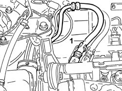
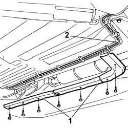
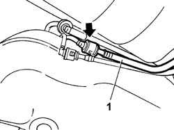
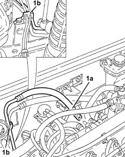
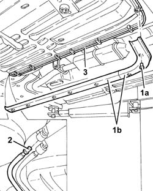
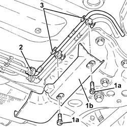
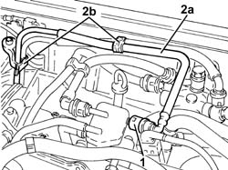
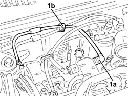
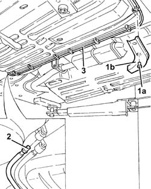

1040B54 fuel line from manifolds - r r
- Path
- Procedures > 10 ENGINE > 1040 FUEL TANK AND PIPES > 1040B fuel supply/return circuit pipe > 1040B54 fuel line from manifolds - r r
- Kind
- repair procedure (removal / refitting; the operation number is the code)
- Applies to
- engines: 1.6 TS , 1.9 JTD 8v , 1.9 JTD 16v, 2.4 JTD 10v, 2.4 JTD 20v; all production periods
- Interactive page
- https://sloeber94.github.io/elrnDB-a156/en/#/3237673
Applies to: engines: 1.6 TS ; all production periods
 Removing
Removing
 Refitting
RefittingPlace the car on a ramp.
Disconnect the battery negative (-) terminal.
 | Name | Connector |
|---|---|---|
- | Battery |
1. Disconnect the fuel return pipe from the fuel manifold and release it from the retaining brackets.

Applies to: engines: 1.6 TS ; all production periods
Raise the car.
1. Remove the plastic protections for the fuel supply and return pipes and for the anti-evaporation system pipe from the lower part of the vehicle.
2. Release the fuel return pipe from the retaining bands.

Applies to: engines: 1.6 TS ; all production periods
1. Disconnect the rapid connector securing the two sections of the fuel return pipe, then remove the front section of the actual pipe.

Applies to: engines: 1.6 TS ; all production periods
Refitting
RemovingConnect the rapid connector securing the front section of the fuel return pipe to the rear section.
Secure the front section of the fuel return pipe using the retaining bands on the underbody.
Fit the plastic protections for the fuel supply and return pipes and the anti-evaporation system pipe.
Lower the vehicle and pass the pipe inside the engine compartment and secure it using the retaining brackets.
Connect the front section of the fuel return pipe to the manifold.
Connect the negative (-) battery terminal.
Applies to: engines: 1.9 JTD 8v , 2.4 JTD 10v; all production periods
Removing
Refitting4450B10 Front WHEEL (one) - R.R.
7055B64 Engine compartment DUST shield in front wheel arch (one), left or right - R.R.
1. Disconnect the front fuel return pipe (1a) from the manifold and release it from the bands (1b) on the engine compartment bulkhead.

Applies to: engines: 1.9 JTD 8v , 2.4 JTD 10v; all production periods
Raise the car.
1. Undo the bolts (1a) and remove the protections (1b) for the fuel pipes.
2. Disconnect the intermediate coupling for the front fuel return pipe.
3. Release the front fuel return pipe from the bands and remove it via the front right wheel arch.

Applies to: engines: 1.9 JTD 8v , 2.4 JTD 10v; all production periods
Refitting
RemovingPlace the front fuel return pipe back in its housing and fix it using the bands.
Connect the intermediate coupling for the front fuel return pipe.
Fit the protections for the fuel pipes and fix them using the bolts.
Lower the vehicle.
Connect the front fuel return pipe to the manifold and fix it using the bands on the engine compartment bulkhead.
7055B64 Engine compartment DUST shield in front wheel arch (one), left or right - R.R.
Applies to: engines: 1.9 JTD 16v; all production periods
Removing
RefittingPosition the vehicle on the ramp.
Proceed with removal 1016A10 sound-proofing cover - r + r .
1. Undo bolts (1a) and remove protection (1b).
2. Disconnect the rapid attachment for the front fuel return pipe, intermediate fuel return pipe side.
3. Release the front fuel return pipe from the fixings under the bodyshell.

Applies to: engines: 1.9 JTD 16v; all production periods
1. Disconnect the rapid attachment on the front fuel return pipe from the fuel return manifold pipe.
2. Release the front fuel return pipe (2a) from the fastenings (2b) on the engine bulkhead and remove it.

Applies to: engines: 1.9 JTD 16v; all production periods
Refitting
RemovingPlace the front fuel return pipe in position and locate it on the engine bulkhead fastenings.
Connect the rapid attachment of the front fuel return pipe from the fuel return manifold pipe.
Fix the front fuel return pipe to the fixings under the bodyshell.
Connect the rapid connector for the front fuel return pipe, intermediate fuel return pipe side.
Place the protection back in its housing and secure it using the bolt.
Proceed with refitting 1016A10 sound-proofing cover - r + r .
Remove the car from the ramps.
Applies to: engines: 2.4 JTD 20v; all production periods
Removing
RefittingPosition the vehicle on the ramp.
Proceed with removal 4450B04 right front wheel r r .
Proceed with removal - 7055B91 Right front WHEEL ARCH LINER - R.R. .
1. Disconnect the rapid attachment on the front fuel return pipe (1a), fuel return manifold pipe side, and release it from the bands (1b) on the engine compartment bulkhead.

Applies to: engines: 2.4 JTD 20v; all production periods
1. Undo the bolt (1a) and remove the protection (1b).
2. Disconnect the rapid attachment for the front fuel return pipe, rear fuel return pipe side.
3. Release the front fuel return pipe from the bands and remove it via the front right wheel arch.

Applies to: engines: 2.4 JTD 20v; all production periods
Refitting
RemovingPlace the front fuel return pipe back in its housing and fix it using the bands.
Connect the rapid connector for the front fuel return pipe, rear fuel return pipe side.
Place the protection back in its housing and secure it using the bolt.
Connect the quick-release connector for the front fuel supply pipe, fuel filter side, and secure it with the bands to the engine compartment bulkhead.
Proceed with refitting - 7055B91 Right front WHEEL ARCH LINER - R.R. .
Proceed with refitting 4450B04 right front wheel r r .
Remove the car from the ramps.
Topics linked from this page (5)
- 1016A10 sound-proofing cover - r + r
- 4450B04 right front wheel r r
- 4450B10 Front WHEEL (one) - R.R.
- 7055B64 Engine compartment DUST shield in front wheel arch (one), left or right - R.R.
- A1 Battery